What is a toy dog made of? What makes a toy dog waggle it’s cute tail, walk around my bedroom and bark every 10 seconds? I decided to study electronic toy dogs for a project focused on artificial creatures. These toys aim to translate the aliveness of real dogs into a playful experience for children. However, their manufactured materials and simple electronics often fail to evoke a true sense of life. Using these toys as a medium to explore ‘creatureness’, I rearranged their electrical components and their materials to create a creature in accordance with its composition. The electronic circuits are now interlinked, conductive wires woven into a play carpet power each toys circuit board in unison. Speakers play barking sounds, LEDs light up, and motors are twitching (Figure 1).
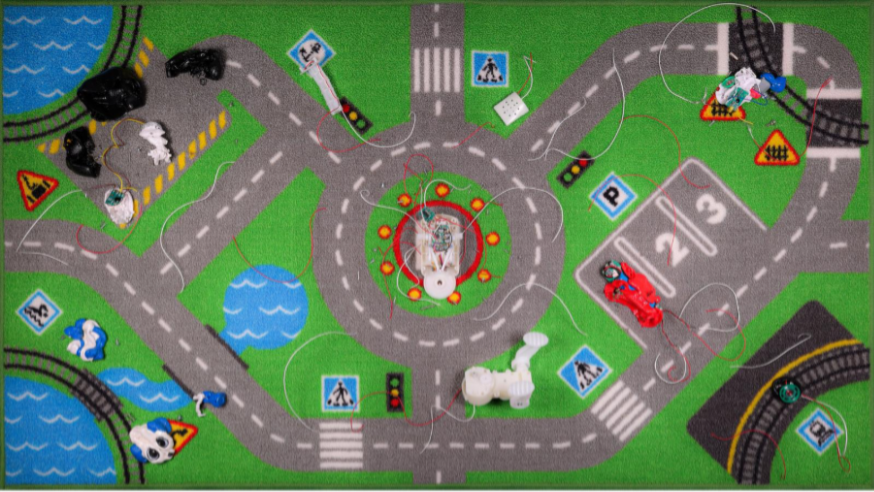
Toys come with a designed way of playing with them. With electronic toy dogs, there are predefined behaviour loops to which we can react. The toy cannot react to how children might play with it, but children explore those loops in situational play or role-play. On first impression, my approach might come across as destructive and as a misuse of these objects. So how come this approach felt more like play to me? I propose to look at works from different artists who play with the concept of toys to in turn broaden our understanding of them.
From what we understand of play, it can be seen as a state of mind or a creative attitude. Play seeks discovery and understanding, which is why it is common for children to play. For me, toys are physical vehicles to facilitate that state of mind – a way to imagine, experiment, understand and build oneself. This understanding of toys can be traced back to Friedrich Froebel, a German pedagogue of the 19th century who created the concept of the kindergarten. He recognised the need for a child-centred educational system that supported self-expression and self-education. For that, he designed a set of play materials, a series of gifts for children to explore simple concepts of shapes, colours and physical properties. This is where the building block comes from.1
While the definition of a toy varies, this view is my preferred understanding of these objects and how I believe these objects should be framed. In Toy Theory (2024) Seth Giddings, Professor of Ludic Technologies at the Winchester School of Art in Southampton, explains that toys ‘are models of phenomenal and symbolic worlds, but in the sense of the model as ‘simulacrum’, not as faithful copy’.2 If this is true, we can learn a lot about our world just by studying toys and learn a lot about toys by studying our world. We can observe a shift in toys getting more technological and having a link to the digital world. Following this logic, it is common for us to use technological devices on a daily basis as well. However, with the rise of artificial intelligence and our dependency on the digital, toys are simulations of a society that is losing its own understanding of its relationship with technology. Big Tech companies provide us the devices and services we use in prospect of being profitable. These companies are now approaching the toy kingdom, and it is important to question where their intentions are placed regarding children and play. Using toys as research material, I wonder then, how can toys serve as a lens to reflect on notions of play, technology and capitalism in our society?
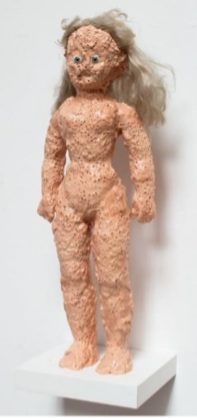
Stefan Gross is a German artist based in Rotterdam. Originally trained as a stained-glass artisan and painter, he now experiments with thermoplastic as a material to explore industrial and natural forms. His work Holy Aknes (2012) is a sculpture of a plastic doll whose surface has been heated in order to deform the doll’s silhouette (Figure 2).
Gross transforms the template body of the doll. The natural reaction of the material to heat creates bubble holes which appear as skin pores. The doll’s body loses its perfect silhouette and smoothness. This manipulation gives the otherwise perfectly moulded body of the doll irregularities. A Barbie doll, while not representative of a natural body, is human-like. A study from the University Central Hospital in Helsinki reveals that Barbie, if she were human, would lack the amount of body fat required to menstruate.3 Barbie dolls also promote a certain ‘appropriate femininity’, a certain role model for children to look up to. Children are in turn more susceptible to develop eating disorders and anorexia, what is known as the Barbie Doll Syndrome.4 The name of Gross’ work seems to reflect on the manipulation of the dolls image. ’Aknes ‘, as a wordplay on Agnes, a feminine name of Greek origin that symbolises pureness, and acne, a skin condition characterised by pimples, irritations and rough skin.
Gross relies on the material's natural properties as his transformative play process. While different types of plastics react differently to heat, the material of this doll reacts by bubbling which suits this work especially. Plastic has this industrial reputation which correlates to mass production, pollution and a sense of eternity, it is human-made so we do not associate it to something natural. But for Gross, plastic belongs in our natural environment,5 it’s an inherent part in our life as it is everywhere. Gross encourages us to re-evaluate the nature of our environment. It seems like our idea of nature is a fantasy of a world without the human footprint. And as this work shows, plastic has natural properties and reactions that categorise it as natural. Plastic also degrades. We think of this material as everlasting, but over time plastic deteriorates and can develop odours, liquids, gases, fade in colour, shrink or crack. This must be taken into consideration in the conservation of object and art works made from plastics. With this knowledge, plastic pollution suddenly becomes performance art. We are witnessing the slow movement of our plastic world gradually fading, it’s just too slow to realise. Holy Aknes therefore creates a particular kind narrative, one that questions in what environment this object fits. Aftermath of a nuclear disaster? Deadly, hot sun due to global warming? For this object to naturally exist, its environment would have to be catastrophic67
This work is most inspiring to me because of the playful approach to the doll. Traditionally, the toy offers a situational type of play that has children create narratives and characters, a type of role play. This kind of play is beneficial for our imaginative capabilities, emotional understanding and social construction, it teaches compassion by letting us be the master of an entity in which we project a soul. As Giddings mentions, ‘The doll imaginary is, and has always been, one of substitution of the human being by an anthropomorphic artifact. [...] dolls take on the delegation of the soul—they promise a coming-to-life, [...] to realize their potential for work, play, companionship, love, and sacrifice’.8
However, dolls today come with an extensive advertisement background where the doll already comes with a name, a function, an aesthetic, a packaging, a music, a story.9 It’s hard to think of a Barbie as something else than a Barbie as everyone sees it as a Barbie. Therefore, something is limited in the situational play this doll offers. It is influenced and doesn’t promote the benefits and possibilities of a boundless, transformative play. On the other hand, Holy Aknes focuses on the object itself. The manufactured intent of the doll is broken, the object is transformed in a way that appears as destructive, and somehow, this approach can be portrayed as wrong. A good example for this would be Sid’s Toys10 in Toy Story. Sid is portrayed as a troubled character that tortures toys for his amusement. He rearranges different parts of multiple toys to create amalgamations that appear as monsters (Figure 3), as something wrong in the toy kingdom. Ultimately, Sid’s play can be seen as transformative, he reappropriates his surroundings creating those toy compositions in a way that isn't dictated by the manufacturer’s intent. This even elevates the role-playing capabilities for a more personal play style.
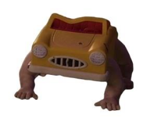
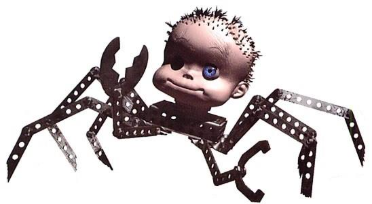
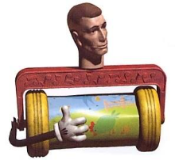
Gross’s approach with Holy Aknes works as a reminder of what can emerge from freeing our approach to toys and manufactured goods. Toys, while technically designed for play, cannot promise play. Play requires an open-ended mindset, but toys are being advertised in a way that compares more to games with how specific and designed their image is. Our perception of manufactured goods is also preservative, having spent money on an object makes it feel wrong to disrupt it in any way. However, by freeing our approach on how to engage with objects, we can shape our environment in a way that is personal and that is driven by play.
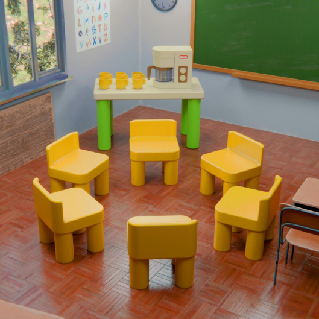
Andy Sahlstrom, also known as Shampoooty, is an American sculptor and digital artist based in New York. His series of works ‘Kids Toys, Adult Issues’ consists of sculptural playsets that appear as toys made for children but showcase darker realities of adulthood. His work Support Group Set (Figure 4) consists of 6 plastic chairs arranged in a circle together with a plastic table that has 6 plastic cups and a coffee machine. The scene portrays a children version of an AA meeting. The sets proportions are children size, and the colours have a classic saturated and vivid look. What resonates here with me is the contrast between childhood innocence and the issues that linger in the structure and consequences of getting older. Sahlstrom’s work makes us question how ethical these hypothetical playsets seem. By removing the societal division between children and adults, we’re forced to realise the contradiction of two very different worldviews. Here, it incites us to see this social act as one that can be played with. We can imagine children role playing what it would be like to have addiction-related issues.
This type of play is interesting to investigate. Why do children even engage in role play? It does not stray far from the reason why children also play with dolls, except instead of projecting a soul onto an object, they want to experience it for themselves. This transformation helps to playfully express emotions and understand what it would feel like to be someone else.11 The typical roles children aim to embody are driven by the type of stories they have seen in books or films, the ones that have very polar characters like the hero and the villain, or the beauty and the beast. Children make a distinction between good and bad, without particularly seeing these roles as better or worse. But the world isn’t separated in good or bad. In the case of an AA meeting, bad things even happen to good people. This playset is interesting in how it makes us imagine a very nuanced type of role play, one that mixes good intentions, bad habits, tragic events, and troubled people. A type of play that seems very human.
Through these works, Sahlstrom takes the role of an educator. While suggesting a more real situational play to children, he also exposes the challenges of growth to adults. The vivid colours we saw as kids became more serious, our attention shifted towards serious topics and play considerably decreased. This makes adults deeply nostalgic about their childhood. We seek to relive parts of this life, something the toy industry is very much aware of.12 We see a lot of companies rebranching their toys to fit adults more and to use nostalgia as a marketing tool. Increasingly, toys fall more into the category of decorations or collectibles, having a toy-like aesthetic but neglecting the need of toys as tools. In my opinion, part of the reason for this is because adults do not play pretend anymore. There is embarrassment in getting involved with imaginary scenarios and acting different. This distinction we make between life stages indicates a certain hierarchy of life: we are nostalgic about our past but ashamed of our anterior naiveness. The Pokémon card community, for example, is mostly dominated by adults: cards have become collectibles. The essence of the card game is lost for the value of cards, and the toy’s experience is minimised to card openings and the thrill of finding a rare card.
LEGO on the other hand found another approach in targeting adults. They release many sets that only work as decorations, removing the play aspect once the build is done. The goal here is to have adults remember what it was like to build a set rather than to be engaged with it afterwards. The similarity with Pokémon cards is that the toy becomes obsolete once it has been unboxed. Cards are graded and left in between acrylic sheets when valuable, and LEGO sets end up exposed on shelves.
What I like about Sahlstrom’s approach in this series is that it feels mischievous. We feel the need to protect children from life’s hardships. Sahlstrom’s work reflects that. This work has an undertone of shame, as if children are not supposed to see this. A lot of effort is put into children design and into making representations as safe and joyous as possible. For example, the ubiquitous city map carpet where the represented cities radiate a feeling of fun (Figure 5). These designs reflect a fantasised world by adults, how we wish life would look and feel like.
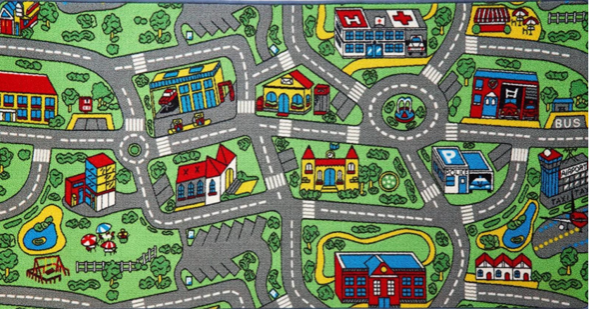
With adults being nostalgic and children looking up to adulthood, it seems that having a division between both is unpopular and Andys work perhaps invites us to dismiss the difference. With such a contrast in innocence and the darker realities ahead, it would be beneficial to apply concepts of play to our adult life and to consider children as not in exclusive need of protection, but as collaborators in the way we look at life and construct our society. This vision of a play centred civilisation traces back to Johan Huizinga, a Dutch historian from the 1900s, who in Homo Ludens comes to the conclusion that ‘the play-element in culture has been on the wane ever since the 18th century, when it was in full flower. Civilization to-day is no longer played, and even where it still seems to play it is false play’.13
I believe it is relevant and essential to have a look at the state of contemporary toys, specifically the upcoming AI-powered and AI-influenced toys. AI being the new, hot, technological innovation, we start seeing it basically everywhere, sometimes without being aware of it. What started in the background of digital systems is now pushed to the foreground for a more direct service in interaction between algorithm and user. The mix of toys and artificial intelligence being new and not yet introduced in Europe makes it important to study and understand how we want it to be brought into our culture.14 It is then important to ask ourselves what kind of play these toys propose.
Hapiko is a Brooklyn-based company that developed Stickerbox, an AI-powered sticker printer (Figure 6). Released in 2025, the toy presents itself as a red cube with an integrated e-ink display. Children can press a button and prompt ideas for the cube to generate and print on sticker paper. The designed play consists of prompting. Children decide what is going to be generated but have no real influence on the drawing's appearance. The particularity of this toy is that the creative process is discarded, children jump straight from idea to result. Rather than functioning as a tool for imagination, Stickerbox removes the graphical development that comes in a playful process. That’s the common line with any AI service, we are not part of its ‘thought’ process, and why would we be? We do not have much knowledge in how AI comes to a conclusion. This lack of understanding makes it also hard to implement safeguards. Reports of this toy, which is promoted as kids safe, include it printing a generated image of a naked woman when it misunderstood a child's prompt.15 Safeguards have allegedly been tightened since the reported incident, but that reminds us that AI is ultimately not about children.
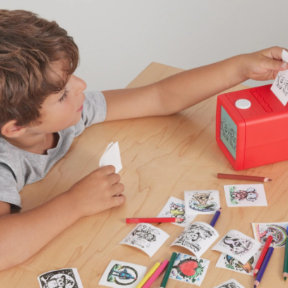
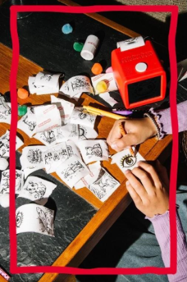
It seems like when it comes to toys, companies have to make them relevant for them to be bought. No matter the thought behind them, they have to be known and doing so requires an extensive amount of advertising. So, another way is to use what is already known as a bridge to push your product.
Curio Interactive Inc is a very recent company based in Silicon Valley that offers AI speech-to-speech dolls for children. Curio Voice Box 2 (Figure 7) is essentially a white plastic box with a speaker and microphone integrated in it that connects to your phone and to AI services via a dedicated app. This box is then stuffed into a doll body, from which there are currently eight, all with their own voice and personality. I was surprised to see that one personality is Ballerina Cappuccina, the AI-generated character part of Italian Brainrot. This phenomenon has grown to be a huge part of online children culture today and it’s important to see how it is physically being brought upon children. Italian Brainrot started as a series of memes of AI-generated creatures who were given pseudo-Italian names. What started on social media is now materialised into a vast array of toys. The peculiarity here is that because the memes have been artificially generated, they are not subjected to copyright laws. Everyone is free to use the Italian Brainrot characters and commercialise them into toys and products. This poses a multitude of concerns. These toys are generally of very low quality because manufacturers are more focused on the popularity of the image rather than the toys themselves.
AI-generated content has proved to be effective with children. Social media algorithms even promote this kind of content to children accounts,16 which is of concern. If more content follows the Italian Brainrot path, the amount of unregulated, trend-following objects advertised as toys is only going to increase in the future.
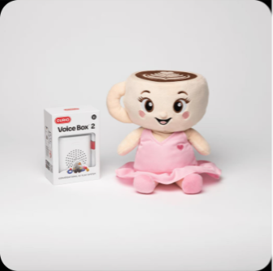
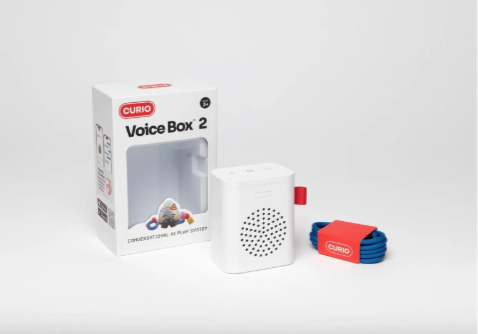
Coming back to Curio, the particularity of the dolls is that it is more than just a toy. AI has a way of appearing human by simulating emotions and responding to us.17 This changes how we see the toy, which can lead to a deep attachment from children who interpret them as beings. As those toys are completely new, the research involved in their impact on social development of children is quite speculative.18 In The Architecture of Loneliness, Lysiane Lamantowicz, a French psychoanalyst, talks about the consequences of social networks on the internet. When paraphrasing American socialist Sherry Turkle, she explains ‘robots or avatars bring in an “imaginary” presence based on a lure, the one of an affective presence that neither corresponds to an exchange nor to an encounter, but makes it possible to avoid a real encounter, which would mobilize a true desire subjected to the randomness of encounters with the Other’.19 By that, Turkle explains that digital or physical characters can simulate a presence but will lack the randomness that comes with interacting with other humans. The predictability and the dynamic these characters propose will therefor push us towards a longing for true relations while giving us the comfort of avoiding them. By introducing AI to children at such early ages, can we ensure they will be able to emotionally and socially differentiate robot and human? Or is the point that they shouldn’t? AI companions seem to redefine what Turkle calls ’the Other’ as such systems are far more complex than an avatar or a robot.
The idea of making AI seem ‘alive’ and part of our environment is only increasing. Momobot and Sweekar (Figure 8) are two AI robot companions that have been showcased at the CES 2026, a leading trade show in consumer electronic innovations in Los Angeles. Momobot presents itself as ‘More than a robot. More than a pet’, as a ‘mysterious little being’ that will bring warmth to your home and family life.20 Curiously, there is little to no information on the companion itself nor on the company, usShell Robotics Inc. There is, nevertheless, more information on Sweekar, an AI pocket pet that requires active care for over a month, otherwise it could ‘die’. Developed by Takway.AI, Sweekar promotes itself as the ‘new Tamagotchi’ and as your ‘lifelong companion’.21 These robots are advertised as pets, something to see as more than a machine, something to care for and love. This incites us to change the way we’re supposed to see AI and robots which can compare to propaganda for normalising these high-tech services in the future.
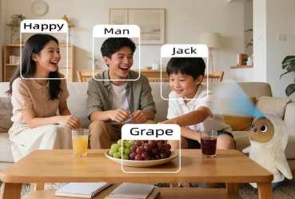
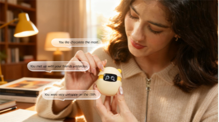
We shouldn’t overlook the fact that technology related gadgets, meaning anything electronic that isn’t essential, are made for upper-middle class families. They promote a specific lifestyle for a specific type of tech enthusiastic consumer.
Toys that require an Internet connection are also subjected to cyber-crime. Smart toys and connected devices that store family data can be subjected to hacking. In 2015, a global data breach at VTech found the data of millions of children to have been vulnerable to unauthorized access.22 Their connected toys lacked adequate security measures, and we shouldn’t forget that data is always stored somewhere. These AI companions raise the fear that their data could be targeted as well, and more so as they are always listening and watching your home. Such toys are definitely premature, more so, unnecessary altogether.
Toy Conclusion
Let’s take a walk in a toy store, what can we notice? Firstly, toys are separated in categories, from age groups but also gender. Aisles with toys categorised for girls are pink, typical toys in these aisles range from baby dolls to kitchen playsets. Aisles for boys are blue, toys range from electric cars to fake power tools. We’ve assigned to gender a specific colour and role, children assimilate from a young age that there are guidelines in this world and expectations that come with it. This is problematic. Nurturing these expectations promote societal inequalities due to gender differences. As a result, some fields are dominated by men or by women because of the roles we give them since childhood.23 This division makes it difficult for girls to explore men dominated fields, or vice versa. Fundamentally, we need to encourage children to explore, plain and simple. Constructs can be played with, identity as well. Ultimately, toys work more as a concept. Giddings points out that ‘The English word itself does not translate easily; in French, jouet or “plaything”, in German, spielzeug or ”play-stuff”’.24 A toy does not necessarily refer to an object. For this sake, it would be more accurate to judge toys as ‘something that,’ according to Giddings, ’has the potential for play’.25
The capitalistic system we are in has accustomed us to depend on producers to satisfy our needs and to define our cultural environment. For that reason, it is crucial that we gain back some agency on this environment. In Homo Ludens, when talking about the play elements in contemporary social life and especially in politics, Huizinga points out that ‘Firstly, certain play-forms may be used consciously or unconsciously to cover up some social or political designs. [...] Secondly, [...] it is always possible to come upon phenomena which, to a superficial eye, have all the appearance of play and might be taken for permanent play-tendencies, but are, in point of fact, nothing of the sort’.26 It is extremely important to understand this, everything is political. AI companions, while being advertised as playful, are products of centralised companies that are built upon data. Reappropriating the toy culture by straying away from the conventional capitalistic system of industries shaping our playscapes and children as young consumers can open a more personal, self-directed culture of play. Riccardo Dalisi, an Italian radical architect, organised street workshops with children where they would create models, pieces of furniture and toys through a ’poor technique’ (Figure 9). They would use recovered materials such as wood, cardboard and textiles to assemble, write and draw on. The created models are performative objects that were used in play and emerge.27 For a toy to require this much infrastructure to exist is concerning. What should just be a mere toy is now a disguised political tool that collects your information 24/7.
Rather than accepting the way toys have evolved to be, I hope this research functions as a call for action. Our world has an abundant supply of already existing toys, objects, and tools that, with a playful attitude, can be transformed into anything. I recently bought a children's book called Otra Cosa by Peruvian writer Katya Adaui. This book is about a girl who makes something else out of everything. Together with her father, she collects all sorts of trinkets she likes, so that one day, she’ll know what to make with them. ‘Thanks to her imagination, dedication and love, objects will always be a source for play for herself and her friends’.28 Perhaps, toys have never been the source for wonder, but our attitude is. Freeing ourselves from preconstructed ideas, and finding the spark we have felt before, can lead to new discoveries and curiosities. This approach is one I’m deeply inspired by and, I hope, is one that is inspiring to you as well.
Adaui, Katya, and Cecilia Codoni. Otra Cosa. Monimo. 2022
Bal, Mieke, and Lysiane Lamantowicz. The Architecture of Loneliness: Reflections on Displacement and Welcoming. Valiz, 2024.
Betz, Alicia. AI Toys Are Here, And Their Safety Is Questionable, Here’s What Parents Should Know. Forbes, 19 December 2025. https://www.forbes.com/sites/forbes-personal-shopper/2025/12/19/ai-toy-safety/
Brandow-Faller, Megan, and Bryan Ganaway. Childhood by Design – Toys and the material culture of childhood, 1700-Present. Bloomsbury Visual Arts, 2018.
Carrasco, Jeremy. @showtoolsai. ‘This kids YouTube algorithm is mostly AI. #aivideo #aisafety #safety #fyp #catI created a fresh YouTube account then watched an hour of autoplayed Cocomelon videos. I then started scrolling YouTube shorts and was shocked’. Instagram. 6 August, 2025. https://www.instagram.com/reels/DNBfXzMgQKB/
Community Playthings. ‘Role Play – Making sense of the world’. https://www.communityplaythings.co.uk/learning-library/articles/role-play-making-sense-of-the-world?srsltid=AfmBOoqk5M5aOYbG1armeGkxYvaauwAK6B6q7eFWy52rtoAoUBU9iOBz
Crawford, Kate, and Vladan Joler. Anatomy of an AI System. 2018. https://anatomyof.ai/
Curio Interactive Inc. AI Toys. 2026. https://heycurio.com/
Froebel Trust. ‘Froebel Gifts’. https://www.froebel.org.uk/training-and-resources/froebels-gifts
Giddings, Seth. Toy Theory: Technology and Imagination in Play. The MIT Press, 2024.
Gross, Stefan, Thijs Wolzak, and Lucette ter Borg. Sci-Fi Nature. Art Collart, 2018.
Huizinga, Johan. Homo Ludens – A Study of the Play-Element in Culture. 1938.
Office of the Privacy Commissioner of Canada. ‘VTech breach investigation highlights security failures’. Archived – News Release. Published on 8 January 2018. https://www.priv.gc.ca/en/opc-news/news-and-announcements/2018/nr-c_180108/
Parth dos Santos, Eva. ‘How gendered toys are keeping girls out of STEM’. TEDx Talk, Zurich, 4 February 2025. Video, 8min. https://www.youtube.com/watch?v=raIjNyBtneg
Roche, Ellen, Kathy Hirsh-Pasek, Rachel Romeo, Dana Suskind, and Kris Perry. Policy guardrails needed as babies around the world begin to interact with AI. Brookings, 19 September 2025. https://www.brookings.edu/articles/policy-guardrails-needed-as-babies-around-the-world-begin-to-interact-with-ai/
Takway.AI. Sweekar. https://takway.ai/
The University of Queensland. ‘Pitch Drop Experiment’. Accessed 27 January 2026. https://smp.uq.edu.au/pitch-drop-experiment
Toy Industrie of Europe. ‘Toys still top EU’s unsafe products list – everybody should play by the same rules’. Published 16 April, 2025. https://www.toyindustries.eu/toys-still-top-eus-unsafe-products-list-everybody-should-play-by-the-same-rules/
usShell Robotics Inc. Momobot. https://www.momobot.ai/
Verdon, Joan. ‘The Rise of “Kidulting”, How Fun And Games For Grownups Are Driving The Profitability Of Play’. US Chamber of Commerce. 16 June 2025. https://www.uschamber.com/co/good-company/launch-pad/kidults-drive-brand-growth
Waag Futurelab. ‘AI AI Barbie: Slim speelgoed komt eraan’. 22 May 2019. https://waag.org/nl/article/ai-ai-barbie-slim-speelgoed-komt-eraan/
Winterman, Denise. ‘What would a real life Barbie look like?’. BBC News Magazine. 6 March 2009. http://news.bbc.co.uk/2/hi/uk_news/magazine/7920962.stm
‘Froebel Gifts’, Froebel Trust, https://www.froebel.org.uk/training-and-resources/froebels-gifts
Seth Giddings, Toy Theory: Technology and Imagination in Play (The MIT Press, November 2024), 8
Denise Winterman, ‘What would a real life Barbie look like?’, BBC News Magazine, 6 March 2009, http://news.bbc.co.uk/2/hi/uk_news/magazine/7920962.stm
Gruber M, Jahn R, Stolba K, Ossege M, ‘ „Das Barbie Syndrom“. Ein Fallbericht über die Körperdysmorphe Störung ['Barbie Doll Syndrome'. A case report of body dysmorphic disorder]’, Neuropsychiatr. 2018 Mar;32(1):44-49. German. doi: 10.1007/s40211-017-0241-2. Epub 2017 Aug 8. PMID: 28791577
Stefan Gross, Thijs Wolzak, Lucette ter Borg, Sci-Fi Nature (Art Collart, 2018), 19
Stefan Gross, Thijs Wolzak, Lucette ter Borg, Sci-Fi Nature (Art Collart, 2018), 27
Seth Giddings, Toy Theory: Technology and Imagination in Play (The MIT Press, November 2024), 59
Megan Brandow-Faller, Bryan Ganaway, Childhood by Design – Toys and the material culture of childhood, 1700-Present, (Bloomsbury Visual Arts, 2018), 141-143
‘Mutant Toys’, Fandom Pixar Wiki, accessed January 27, 2026, https://pixar.fandom.com/wiki/Mutant_Toys
‘Role Play – Making sense of the world’, Community Playthings, https://www.communityplaythings.co.uk/learning-library/articles/role-play-making-sense-of-the-world?srsltid=AfmBOoqk5M5aOYbG1armeGkxYvaauwAK6B6q7eFWy52rtoAoUBU9iOBz
Joan Verdon, ‘The Rise of “Kidulting”, How Fun And Games For Grownups Are Driving The Profitability Of Play’, US Chamber of Commerce, 16 June 2025, https://www.uschamber.com/co/good-company/launch-pad/kidults-drive-brand-growth
Johan Huizinga, Homo Ludens – A Study of the Play-Element in Culture, (1938), 206
Waag Futurelab, ‘AI AI Barbie: Slim speelgoed komt eraan’, 22 May 2019, https://waag.org/nl/article/ai-ai-barbie-slim-speelgoed-komt-eraan/
Alicia Betz, AI Toys Are Here, And Their Safety Is Questionable, Here’s What Parents Should Know, Forbes (19 December 2025), https://www.forbes.com/sites/forbes-personal-shopper/2025/12/19/ai-toy-safety/
Jeremy Carrasco (@showtoolsai), ‘This kids YouTube algorithm is mostly AI. #aivideo #aisafety #safety #fyp #catI created a fresh YouTube account then watched an hour of autoplayed Cocomelon videos. I then started scrolling YouTube shorts and was shocked.’, Instagram, 6 August 2025, https://www.instagram.com/reels/DNBfXzMgQKB/
U.S. PIRG Education Fund, Trouble in Toyland 2025, (November 2025), 24
Ellen Roche, Kathy Hirsh-Pasek, Rachel Romeo, Dana Suskind, and Kris Perry, Policy guardrails needed as babies around the world begin to interact with AI, Brookings (19 September 2025), https://www.brookings.edu/articles/policy-guardrails-needed-as-babies-around-the-world-begin-to-interact-with-ai/
Mieke Bal, Lysiane Lamantowicz, The Architecture of Loneliness: Reflections on Displacement and Welcoming, (Valiz, May 2024), 93
usShell Robotics Inc, Momobot, https://www.momobot.ai/
Takway.AI, Sweekar, https://takway.ai/
‘VTech breach investigation highlights security failures’, Office of the Privacy Commissioner of Canada, Archived – News Release published on 8th of January 2018, https://www.priv.gc.ca/en/opc-news/news-and-announcements/2018/nr-c_180108/
TEDx Zurich, (4 February 2025), How gendered toys are keeping girls out of STEM | Eva Parth dos Santos [Video], https://www.youtube.com/watch?v=raIjNyBtneg
Seth Giddings, Toy Theory: Technology and Imagination in Play (The MIT Press, November 2024), 29
Seth Giddings, Toy Theory: Technology and Imagination in Play (The MIT Press, November 2024), 30
Johan Huizinga, Homo Ludens – A Study of the Play-Element in Culture, (1938), 205
Kate Crawford, and Vladan Joler, Anatomy of an AI System, (2018), https://anatomyof.ai/
Katya Adaui, and Cecilia Codoni, Otra Cosa, (Monimo, 2022), consulted on Babelica, https://babelica.alliance-publishers.org/books/otra-cosa